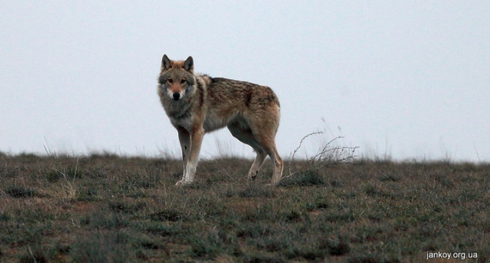

Волки
Волки – это животные, которые являются всем известными хищниками.
Про волков существует много сказок и присказок, которые описывают его то как свирепого зверя, то одомашненное животное. На самом деле, волка нельзя отнести ни к тому, ни иному.
Волк – это животное, которое является млекопитающим из отряда псовых. Согласно исследованиям именно он и есть предок домашней собаки. Вырастают они около 160 сантиметров в длину и весят 60 килограммов. На сегодня это животное насчитывает более 35 подвидов своего рода. Живут «родственники» в различных частях света. Все они разного размера и окраса, но объединяет их одно – они хищники! По своему внешнему виду волк напоминает большую остроухую собаку. Лапы – высокие и худые, их вряд ли можно назвать массивными. Холка – высоко посаженная, морда – крупная, что и отличает этот род от койотов и собак.
У волков хорошая способность к адаптации. Они могут преодолевать большие расстояния и при этом чувствовать себя как дома. Обладают эти хищники прекрасным обонянием и острым слухом. Свою добычу могут учуять за 2-3 километра. Зубы у волка острые как лезвие, именно ими он раздирает свою добычу. Плюс ко всему зубы – это волчья оборона от других хищников. Говоря про волков, нужно упомянуть про их особенный голос. В отличии от всех животных, они могут издавать различные звуки:
- Ворчание;
- Вой;
- Лай;
- Свист;
- Визг;
- Хныканье.
Из-за волчьего голоса его легко спутать с другими животными. Среда обитания и образ жизни волка Волки могут обитать на абсолютно разных местностях, но предпочитают лесостепи, тундру, степи, полупустыни. Они любят и лесные зоны. Повышенная влажность волку не придется по вкусу. Могут спокойно селиться недалеко от людей и подходить к ним на близкие расстояния.
Живут волки стаями, в которых обязательно есть вожак. Он же выбирает себе лучшую самку. Летом и весной стая распадается, но все животные остаются на своей территории. Лучшее место достается вожаку и его спутнице. Остальные члены стаи либо объединяются в пары, либо начинают вести бродячий образ жизни. Метят волки территорию подобно собакам.Обычно одна стая занимает в среднем 50 километров. По ночам, но не каждый день, волки заводят хоровое пение. Начинает выть вожак, после к нему присоединяются остальные.
Таким образом, волки показывают сплоченность и принадлежность к стае. Жизнь волков, как животных, можно отнести к ночной. Очень часто эти хищники дают о себе знать, начиная громко выть. На охоте волк может развивать скорость до 60 км/ч и пробегать около 70 километров. Перед тем как начать охотиться волки часто начинают выть. Иногда они таким образом предупреждают собратьев о предстоящей охоте. Вожак стаи подает боевой клич – это и есть начало их действия.
Волки, как правило, обладают не вспыльчивым характером. Дружелюбными, конечно, их назвать трудно. Волчья стая всегда обороняется вместе, собственно, как и охотится. Самцы всегда защищают самок и молодняк. Если на самку или волчонка нападает хищник в разы крупнее, ни один волк не будет стоять в стороне. Он кинется их защищать, чего бы ему это не стоило. Такова жизнь животного – волка.
По отношению к другим хищникам волки относятся равнодушно. Конечно, они не любят животных, которые пытаются охотиться на их территории. Но и в драку просто так не лезут.
Про волков ходят легенды как про кровожадных животных, но на деле все совсем не так! Животный мир волков устроен так, что они прилежные семьянины, которые охотятся, чтобы прокормиться. Какое же животное волк?
Волк – это явный представитель плотоядных. К растительной пище он прибегает в крайних случаях, когда еды нет совсем. Взрослая особь поглощает за 1 раз от 2 до 6 килограммов мяса. У этих хищников есть привычка припрятывать пищу на потом. Даже не смотря на то, что волк является очень прожорливым, он способен долгое время голодать. В основной рацион волков входят овцы, косули, зайцы. По сути данные хищники поедают всех животных, которых могут добыть. Отличие в кормлении волков напрямую зависит от их ареала обитания.
Волки являются моногамными существами, поэтому их браки обычно длятся много лет. С двух-трех лет животное готово к размножению. Брачный период приходится на январь-апрель в зависимости от места обитания. В это время в стае обстановка накаляется. Доминирующие самец и самка охраняют друг друга от остальных членов. Остальные самцы начинают активно ухаживать за волчицами и драться за них.
Обычно за год самка выводит только одно потомство. Беременность длится около 65 дней. В помете бывает от 3 до 13 щенков. В период кормления самка не отходит далеко от своей норы и всячески ее охраняет. Папа – волк не участвует в этот период в жизни детенышей. После молочного вскармливания вся стая заботится о том, чтобы волчата были сыты. Любой волк делится своим куском с малышами. В зависимости от места обитания щенки могут оставаться в стае или уходить искать новую территорию.
Если вы захотели завести волка ,то:
Если вы таки приняли решение завести волка, то первое что нужно сделать, окружить волчонка любовью и заботой.
На него нельзя кричать и конечно бить.
Волк –животное леса, поэтому необходимо ему обеспечить личное пространство. Вообще, конечно, сложно представить волка домашним животным. Кормить волка советуется свежим мясом и рыбой. Уделяйте животному много времени и внимания, животное должно чувствовать вашу любовь. С волком нужно играть как с собакой, дрессировать.
Нельзя забывать, что волк – это хищник и он опасен для человека. В дикой природе люди часто охотятся на этих зверей ради шкур, хотя охота на волков запрещена во многих странах. Хотя большинство этих хищником абсолютно не представляют опасность для человека.
стр 2